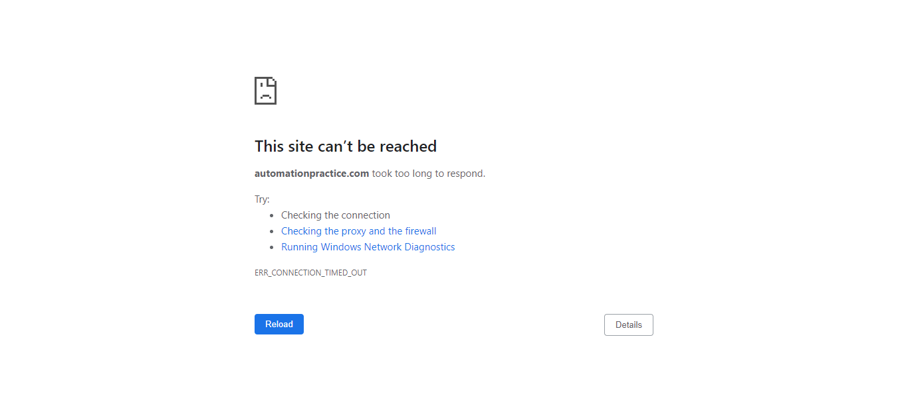

-
Account Page feature
6:35:32 AM / 00:01:31:762 Fail
Account Page feature
08.26.2021 6:35:32 AM 08.26.2021 6:37:04 AM 00:01:31:762 · #test-id=1PassAccounts Page TitleGiven user has already logged in to applicationusername password ramyrafat997@gmail.com ramy1029384756 Given user is on Accounts pageWhen user gets the title of the pageThen page title should be "My account - My Store"FailAccounts section countGiven user has already logged in to applicationusername password ramyrafat997@gmail.com ramy1029384756 Given user is on Accounts pageStep skippedThen user get accounts sectionOrder history and details My credit slips My addresses My personal information My wishlists Step skippedAnd account section count should be 5Step skippedAppHooks.ApplicationHooks.tearDown(io.cucumber.java.Scenario)_A_c_c_o_u_n_t_s_ _s_e_c_t_i_o_n_ _c_o_u_n_t_ -
Login Page Feature
6:37:04 AM / 00:01:27:898 Fail
Login Page Feature
08.26.2021 6:37:04 AM 08.26.2021 6:38:32 AM 00:01:27:898 · #test-id=20FailLogin Page titleGiven user is on login pageWhen user gets the title of the pageStep skippedThen page title should be "Login - My Store"Step skippedAppHooks.ApplicationHooks.tearDown(io.cucumber.java.Scenario)_L_o_g_i_n_ _P_a_g_e_ _t_i_t_l_e_FailForget Password LinkGiven user is on login pageThen forget password link should be displayedAppHooks.ApplicationHooks.tearDown(io.cucumber.java.Scenario)FailLogin with correct credentialsGiven user is on login pageWhen user enters username "ramyrafat997@gmail.com"Step skippedAnd user enters password "ramy1029384756"Step skippedAnd user click on login buttonStep skippedThen user gets the title of the pageStep skippedAnd page title should be "My account - My Store"Step skippedAppHooks.ApplicationHooks.tearDown(io.cucumber.java.Scenario)
-
org.openqa.selenium.WebDriverException
6 tests
org.openqa.selenium.WebDriverException
6 failedStatus Timestamp TestName Fail 06:36:20 AM Given user has already logged in to application Account Page feature.Accounts section count.Given user has already logged in to applicationFail 06:37:07 AM Given user is on login page Login Page Feature.Login Page title.Given user is on login pageFail 06:38:17 AM Then forget password link should be displayed Login Page Feature.Forget Password Link.Then forget password link should be displayedFail 06:38:21 AM AppHooks.ApplicationHooks.tearDown(io.cucumber.java.Scenario) Login Page Feature.Forget Password Link.AppHooks.ApplicationHooks.tearDown(io.cucumber.java.Scenario)Fail 06:38:28 AM Given user is on login page Login Page Feature.Login with correct credentials.Given user is on login pageFail 06:38:29 AM AppHooks.ApplicationHooks.tearDown(io.cucumber.java.Scenario) Login Page Feature.Login with correct credentials.AppHooks.ApplicationHooks.tearDown(io.cucumber.java.Scenario)
Started
Aug 26, 2021 06:35:31
Ended
Aug 26, 2021 06:38:32
Features Passed
0
Features Failed
2
Features
Scenarios
Steps
Timeline
System/Environment
| Name | Value |
|---|---|
| version | 10 |
| os | Windows |